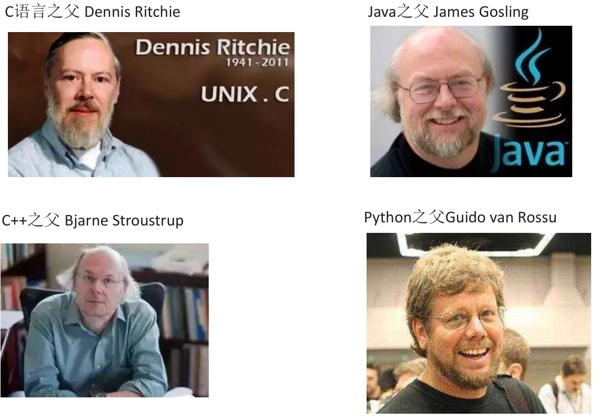
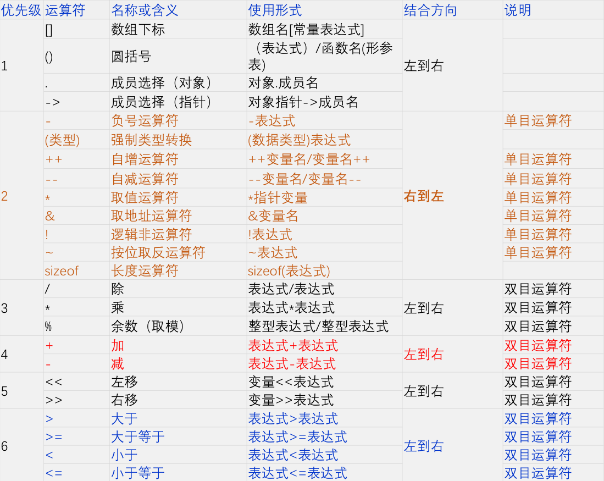
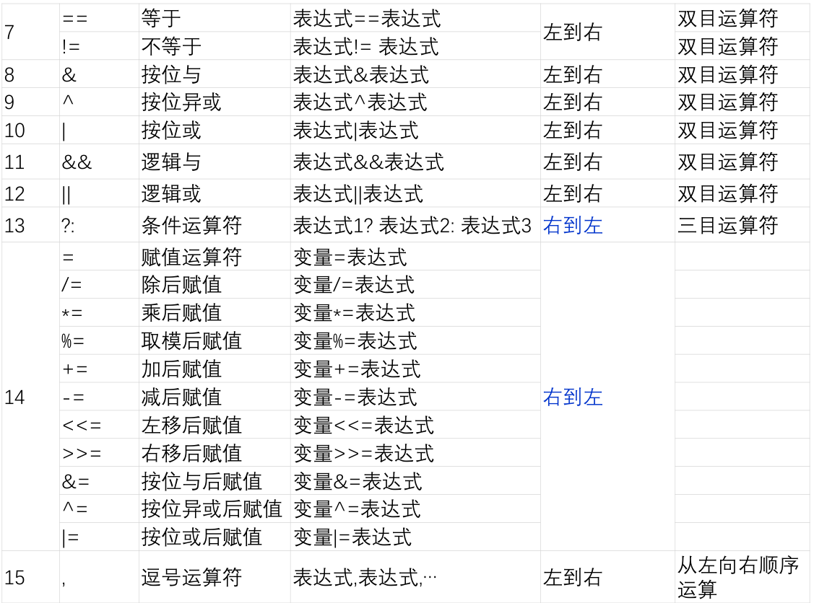
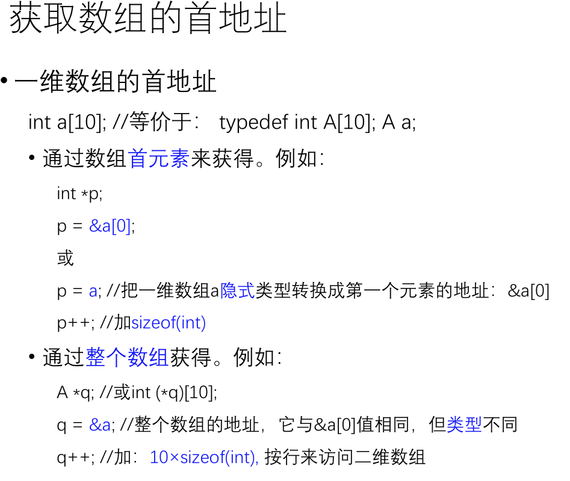
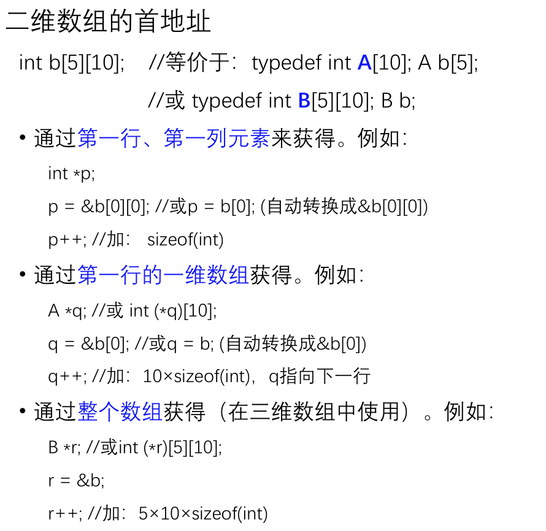
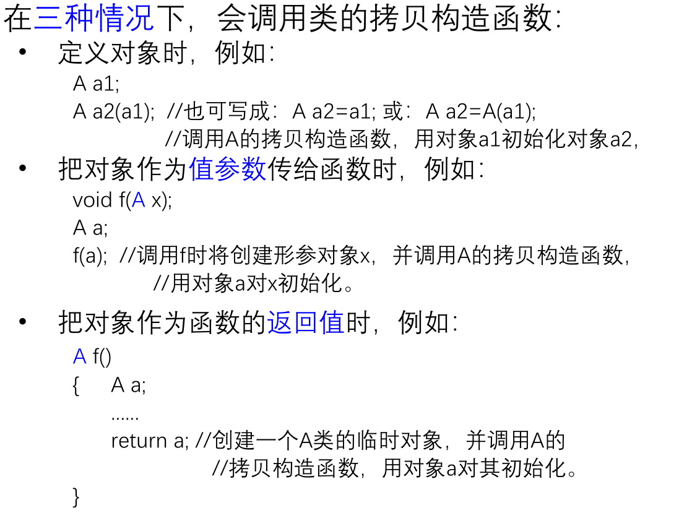
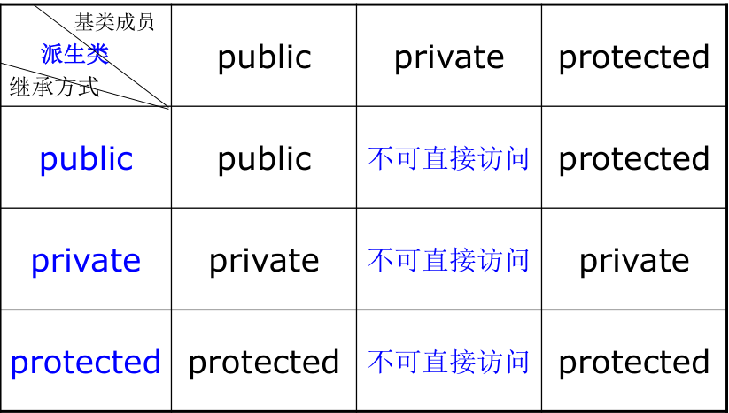
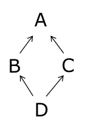
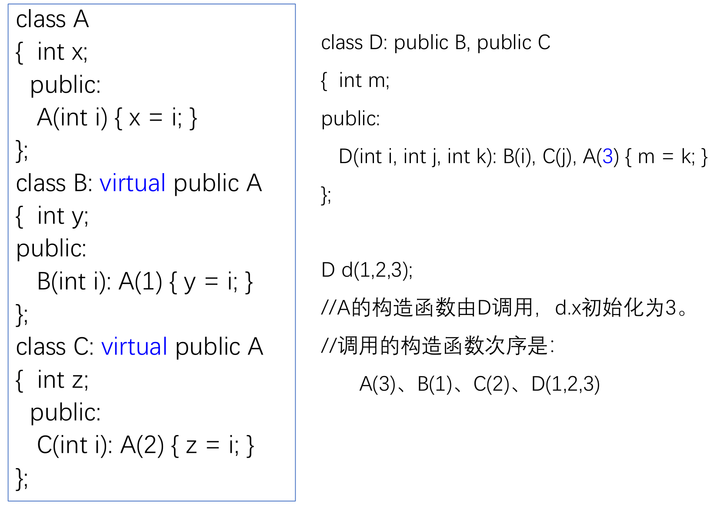
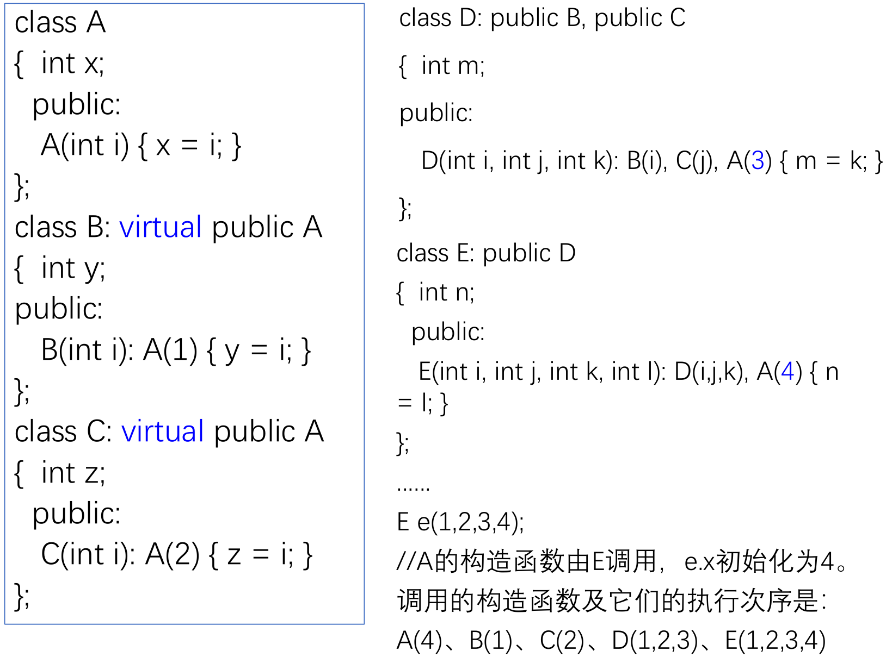

C++回顾

过去的学习中常用python做数据分析机器学习类的任务，java做软件工程项目，c系的c和c++却疏于使用。
基本数据类型与表达式
编辑(.cpp,.h)→编译(.obj)→链接(.exe)→运行→输出结果
符号常量的定义格式为：#define <常量名> <值>或 const <类型名> <常量名>=<值>；
ASCII字符集：A 65 a 97
同一个字母大小写相差32，因此大写字母+32即可转换成小写


result = value << shift;
value 是要进行左移的整数（转换为二进制），shift 是要左移的位数，result 是左移后的结果。
函数
• 值传递：把实参的值赋值给形参。
• 地址或引用传递：把实参的地址赋值给形参。
C++默认的参数传递方式是值传递
如果函数定义在本源文件中调用点之后或定义在其它文件（如：C++的标准库）中，则在调用前需要对被调用的函数进行声明。
如果在使用一个全局变量时未见到它的定义，则在使用前需要对该全局变量进行声明，格式为：extern <类型名> <变量名>;
模块可以单独编译。
接口（.h文件 ）：给出在本模块中定义的、提供给其它模块使用的一些程序实体（如：全局函数、全局变量等）的声明和（如类型、常量等）定义；
指令#include <文件名>或#include “文件名”：<文件名>表示在系统指定的目录下寻找指定文件。“文件名”表示先在包含#include命令的源文件所在的目录下查找指定文件，找不到时，再到系统指定的目录下寻找指定文件。
如果在某个局部作用域中定义了与某个全局标识符同名的标识符，则该全局标识符的作用域应扣掉与之同名的局部标识符的作用域。
在局部标识符的作用域中若要使用与其同名的全局标识符，则需要用全局域选择符（::）对全局标识符进行修饰（受限）
函数作用域包括整个函数，而局部作用域是从定义点开始到函数定义或复合语句结束。
具有文件作用域的标识符只能在定义它们的源文件（模块）中使用。
名空间（namespace）：在一个名空间中定义的全局标识符，其作用域为该名空间。当在一个名空间外部需要使用该名空间中定义的全局标识符时，可用该名空间的名字来修饰或受限。
C++中的关键词static有两个不同的含义。
• 在局部变量的定义中，static修饰符用于指定局部变量采用静态存储分配；
• 在全局标识符的定义中，static修饰符用于把全局标识符的作用域改变为文件作用域。用const定义的全局常量名也具有文件作用域。
宏定义是一种编译预处理命令，可以实现类似函数的功能：#define <宏名>(<参数表>) <文字串>
例如：#define max(a,b) (((a)>(b))?(a):(b))
在编译之前，编译预处理程序将对宏的使用进行文字替换！然后交给编译程序编译。例如：编译前将把 cout << max(x,y); 替换成：cout << (((x)>(y))?(x):(y));
内联函数的作用是建议编译程序把该函数的函数体插入到调用点，运行时不再执行调用（已经复制到这里了）。
对参数默认值的指定只在函数声明（包括定义性声明）处有意义。
标准库的头文件cmath（或math.h）中声明的一些数学函数：
• double fabs( double x ); //double型的绝对值
• double ceil( double x ); //不小于x的最小整数（返回值为以 double表示的整型数）
• double floor( double x ); //不大于x的最大整数（返回值为以 double表示的整型数）
• double sqrt( double x ); //平方根
• double pow( double x, double y ); //x的y次幂
标准库的头文件cstdlib（或stdlib.h）中声明的一些函数：
• int abs( int n ); //int型的绝对值
• long labs( long n ); //long int型的绝对值
• int rand( ); //生成一个伪随机数
• void srand( unsigned int seed ); //为rand设置”种子”的值
• void exit( int status ); //终止整个C++程序的执行，status用于指
出终止的原因，一般来说，status取0表示程序正常终止
• void abort( ); //终止整个C++程序的执行，
// abort与exit的主要区别是： abort不做“关闭文件”等一些“善后”处理工作，这将会使得程序写到文件中的一些数据丢失！
• 标准库的头文件cctype（或ctype.h）中声明的一些函数：
int isdigit( int c ); //判断c是否为数字，返回非零：是，返回0：不是
int isalpha( int c ); //判断c是否为字母，返回非零：是，返回0：不是
int isalnum( int c ); //判断c是否为字母或数字，返回非零：是，返回0：不是
int isupper( int c ); //判断c是否为大写字母，返回非零：是，返回0：不是
int islower( int c ); //判断c是否为小写字母，返回非零：是，返回0：不是
int tolower( int c ); //如果c是大写字母，则返回相应的小写字母，否则返回c
int toupper( int c ); //如果c是小写字母，则返回相应的大写字母，否则返回c
复合数据类型
不能对两个数组进行整体赋值，需要通过元素来进行。
调用时需要把一维数组变量的名以及数组元素的个数传给被调用函数。
标准库中的字符串处理函数（头文件cstring或string.h ）
• 计算字符串的长度
• int strlen(const char s[]);
• 字符串复制
• char strcpy(char dst[],const char src[]);
• char strncpy(char dst[],const char src[],int n);
• 字符串拼接
• char strcat(char dst[],const char src[]);
• char strncat(char dst[],const char src[],int n);
• 字符串比较
• int strcmp(const char s1[],const char s2[]);
• int strncmp(const char s1[],const char s2[],int n);
向函数传递二维数组：被调用函数的形参应为不带数组行数的二维数组定义及其行数。作为形参的二维数组的列数必须要写。
1 | int a[2][3]={{1,2,3},{4,5,6}}; |
以上初始化按照数组的行来进行
1 | int a[2][3]={{1,2},{3,4}}; |
每一行的前2个分别初始化为1、2和3、4，其它为0
1 | int a[][3]={{1,2,3},{4,5,6},{7,8,9}}; |
行数为3
枚举类型的定义格式为：
enum <枚举类型名> {<枚举值表>}；其中，<枚举值表>为用逗号隔开的若干个整型符号常量。
默认情况下，第一个枚举值为0，其它的值为前一个值加1。
C++通常用元素类型为char的一维数组（字符数组）来表示字符串类型
匿名联合允许在不声明联合名称的情况下定义联合变量。全局匿名联合必须是静态的
指针类型
获取变量的地址：&<变量名>
int *p, q; //p为指针变量，q为int型变量
typedef int Pointer;
Pointer p, q; //p和q均为指针类型的变量
void p; //p可以指向任意类型的数据
如果需要提高参数效率，但不想有副作用，则需要把形参定义为指向常量的指针类型！
语法总结：
int x,*p,*p1;
指针声明：int p1;或者int p2;
指针赋值：p = &x; //OK，p指向x。 p1 = p; //OK，p1指向p所指向的变量。
指针间接访问：*p = 2;//等价于：x = 2; (*p).i << p->d 相当于a.i和a.d
指针运算：p += 2; //p的值为x的地址加上sizeof(int)*2
指针访问数组：p = &a[0]; //或 p = a; 访问数组a的元素可采用： *p、*(p+1)、…、*(p+9)或p[0]、p[1]、…、p[9] 注：a即数组的首地址
*p++会输出当前的，再指向下一个
指针输出：cout << *p; //输出p指向的值（x的值） cout << p; //输出p的值(x的地址)
特殊情况：
char str[ ]=”ABCD”;char q=&str[0];
cout << q; //输出q指向的字符：A
cout << q; //输出q指向的字符串：ABCD，这里特殊
cout << (void *)q //输出q的值，即字符串”ABCD”的内存首地址


int *a[10];//由10个元素构成的一维数组(指针数组)，每个元素是1个int*指针
argc表示传给函数main的参数的个数，argv表示各个参数，它是一个一维数组
函数指针：returnType (*pointerName)(parameterList); 指向一个函数
returnType 是函数的返回类型，pointerName 是函数指针的名称，parameterList 是函数的参数列表。例如：
double f(int x) { … }
double (*fp)(int);
fp = &f; //或 fp = f;
(*fp)(10); //或 fp(10); //通过函数指针调用函数
新建一个对象（或变量）有两种方式，静态分配（分配在栈中）和动态分配（分配在堆中）。
• 栈(stack)：速度快，空间小，先进后出，管理方便；事先必须知道大小。
• 堆(heap)：申请内存慢，访问慢，修改慢。灵活，空间大。不能事先知道对象（或变量，特别是数组）需要分配的大小时，只能存放在堆区。
定义引用类型变量时，应在变量名加上符号“&”，以区别于普通变量：int &y=x;
定义引用变量时必须要有初始化，即指明引用谁。
引用类型的变量定义之后，它不能再引用其它变量。
返回一个对局部量的引用是不合法的。可以返回一个对静态变量的引用。
类与对象
public: //公有，访问不受限制。
private: //私有，只能在本类和友元的代码中访问。
protected: //保护，只能在本类、派生类和友元的代码中访问。
构造函数可以重载，其中不带参数的（或所有参数都有默认值的）构造函数被称为默认构造函数。
对于常量数据成员和引用数据成员，可以在定义构造函数时，在函数头和函数体之间加入一个成员初始化表来对它们进行初始化。例如：
1 | A(): z(x),y(1) //成员初始化表 |
析构函数为“~<类名>”，没有返回类型、不带参数、不能被重载。
先执行成员对象类的构造函数，再执行本身类的构造函数。析构函数的执行次序与构造函数的执行次序正好相反
拷贝构造函数：ClassName(const ClassName& other);

C++编译器为一个类产生的默认函数包括： 默认构造函数、拷贝构造函数、析构函数、赋值运算符
const成员函数不能改变对象的状态（数据成员的值）：void f() const {…}
类的静态数据成员对该类的所有对象只有一个拷贝。静态成员函数只能访问类的静态成员。
友元： 类可以将其他类或函数声明为友元，以允许它们访问自己的私有成员。 友元关系不具有对称性和传递性。
操作符重载：
1 | return_type operator<operator_symbol>(parameters) |
操作符既可以作为全局友元函数，也可以作为非静态成员函数来重载。
特殊类型的操作符重载：=、[]、()、->、类型转换 未完持续…
单继承的派生类只能有一个直接基类，定义格式：
class <派生类名>：[<继承方式>] <基类名>
{
<成员说明表>
};
继承方式的含义：

创建派生类的对象时先执行基类的构造函数再执行派生类构造函数。
要调用基类的非默认构造函数，则必须显式地指出：B(int i, int j):A(i) { y = j; }
如果一个类D既有基类B、又有成员对象类M（不是派生类！！！），则
• 在创建D类对象时，构造函数的执行次序为：B M D（基类、成员对象类、本身）
• 当D类的对象消亡时，析构函数的执行次序为：D M B（反过来）
派生类自定义的赋值操作符重载函数不会自动调用基类的赋值操作，需要显式地调用基类的赋值操作符来实现基类成员的赋值。
具有继承关系的两个类之间往往是一般与特殊的关系（is-a-kind-of）；
一个类作为另一个类的成员对象类，具有聚集关系的两个类之间属于部分与整体的关系（is-a-part-of）
静态绑定中，函数的选择是根据变量的声明类型决定的，而不是实际运行时变量的类型。
动态绑定中，函数的选择是根据变量的实际运行时类型决定的。
virtual void f(); //虚函数，实现动态绑定
虚函数的动态绑定：基类中的一个成员函数如果被定义成虚函数，则在派生类中定义的、与之具有相同型构的成员函数是对基类该成员函数的覆盖（override）
• 只有类的成员函数才可以是虚函数，但静态成员函数不能是虚函数。
• 构造函数不能是虚函数，析构函数可以（往往）是虚函数。
• 只有通过基类的指针或引用访问基类的虚函数时才进行动态绑定。
• 基类的构造函数中对虚函数的调用不进行动态绑定。
一旦把基类的成员函数定义为虚函数，在基类的所有派生类中，该函数均保持虚函数的特性。
在派生类中重新定义基类中的虚函数时，可以省略关键字virtual。
何时需要定义虚函数？
1.基类实现的方法可能不是最好，今后可能还会有更好的实现方法。
2.在基类中无法给出某些成员函数的实现，必须由不同的派生类根据实际情况给出具体的实现。
纯虚函数是指函数体为空（=0）的虚函数， 例如：virtual int f()=0; //纯虚函数
包含纯虚函数的类称为抽象类 。
当一个成员函数被声明为const时，它表明该函数不会修改类的成员变量：
void draw() const
{
…… //画矩形
}
多继承的派生类定义
格式为：
class <派生类名>： [<继承方式>] <基类名1>，[<继承方式>] <基类名2>，…
{ <成员说明表>
};
• 解决重复继承的办法：虚基类

• 如果要求类D中只有一个x，则应把A定义为B和C的虚基类：
class B: virtual public A {…};
class C: virtual public A {…};
class D: public B, public C {…};
对于包含虚基类的类：
•虚基类的构造函数由最后派生出的类的构造函数直接调用。
•虚基类的构造函数优先非虚基类的构造函数执行。如果不懂，看ppt的例子。


模板
函数模板：
1 | template <class T> |
类模板：
1 | template <class T> |
两种模板都可带有非类型参数：template
容器是由长度可变的同类型元素所构成的序列。
向量容器vector实例：
1 |
|
容器类模板提供了一些公共的操作：
•T& front();
• 获取容器中第一个元素的引用。适用于vector、list、deque和queue。
•T& back();
• 获取容器中最后一个元素的引用。适用于vector、list、deque和queue。
•void push_front(const T& x);和void pop_front();
• 分别在容器的头部增加和删除一个元素。适用于list和deque。
•void push_back(const T& x);和void pop_back();
• 分别在容器的尾部增加和删除一个元素。适用于vector、list和deque。
• iterator begin();
• 获取指向容器中第一个元素位置的迭代器。适用于除queue和stack以外的所有容器。
• iterator end();
• 获取指向容器中最后一个元素的下一个位置的迭代器。适用于除queue和stack以外的所有容器。
• iterator insert(iterator pos, const T& x);
• void insert(iterator pos, InputIt first, InputIt last);
• 分别在容器中的指定位置pos（迭代器）插入一个和多个元素。适用于vector、list和deque。
• iterator erase(iterator pos);和 iterator erase(iterator first,iterator last);
• 分别在容器中删除指定位置pos（迭代器）上的一个和某范围内的多个元素。适用于vector、list、deque、map/multimap、set/multiset以及basic_string。
• T& operator[](size_type pos);
• 获取容器中某位置pos（序号）上的元素。适用于vector、deque和basic_string。
• ValueType& operator[](const KeyType& key);
• 获取容器中某个关键字所关联的值的引用。适用于map。
• T& at(size_type pos);
• 获取容器中某位置pos（序号）上的元素的引用，并进行越界检查。适用于vector、deque和basic_string。
• iterator find(const T& key);
• 根据关键字在容器中查找某个元素，返回指向元素的迭代器（找到）或最后一个元素的下一个位置（未找到）。适用于map/multimap和set/multiset。
示例程序2：
1 |
|
输出：
A::dtor 10
B::dtor 1
A::dtor 5
B::show1
A::show5
输入输出
打开文件：FILE fopen(const char filename, const char *mode);
关闭文件：fclose(FILE *stream);
文件输出：
ofstream out_file(<文件名>,<打开方式>);
out_file.open(<文件名>,<打开方式>);
out_file << x << ‘ ‘ << y << endl;
outFile.close();
文件输入：创建ifstream类
ifstream in_file(“D:\myfile.txt”,ios::in);
if (!in_file) exit(-1);
in_file >> x >> y;
既能读入数据、也能输出数据的文件，则需要创建一个fstream类的对象。
示例程序
1.求出小于n的所有素数
1 |
|
2.矩阵转置
1 | //矩阵转置：交换a[i][j]和a[j][i]的值，i=0~N-1,j=i+1~N-1 |
3.根据输入的要求执行在一个函数表中定义的某个函数
1 |
|
4.矩阵向量乘法
1 | void multiply(const Matrix &m, const Vector &v, Vector &r) |
5.游戏
游戏里有个虚基类叫“怪物”，有纯虚函数“攻击”。然后派生出了三个子类“狼”、“蜘蛛”、“蛇”，都实现了自己不同的“攻击”函数，比如狼是咬人，蜘蛛是吐丝，蛇是缠人。编写程序，定义这几个类，在 main()中定义一个虚基类指针数组 pmonster，把各种怪物的指针给它，然后循环执行 pmonster[i]->attack() 攻击玩家。attack 函数输出一个相应的字符串。
1 |
|
6.编写类 CDemo
要求程序输出结果: 7,6,5,5，
1 |
|
7.定义类模板 Point
有两个坐标(x,y)，私有成员 x 和 y 的类型可以
不同，坐标的数据类型可以是 int、float, double 类型. 具有获取
坐标的成员函数 getX 和 getY，支持如下使用
Point
Point
cout<<p1.getX()<<”,”<<p1.getY()<<endl;
cout<<p2.getX()<<”,”<<p2.getY()<<endl;
1 | template<class T,class Q> |
8.定义两个重载函数 mod
分别求两个整数相除的余数和两个实数相除的余数。两个实数求余定义为实数四舍五入取整后相除的余数。在 main 函数中调用这 2 个 mod 函数，写出完整的可以编译运行的程序。
1 |
|
9.定义 Complex 复数类
支持
1）通过类的成员函数的方式实现两个复数相加；
2）c 是 Complex 的对象，支持语句“cout << c;”，能以“a+bi”的形式输出 c 的值；
1 |
|
10.编写程序，声明基类 Shape
由它派生出 2 个派生类： Circle(圆形)、
Rectangle(矩形)。在 main()中分别建立 2 个派生类的对象，2 个图形的数据在定义对象时给定，并调用下面的 printArea 函数输出其面积。
//输出面积的函数
void printArea(const Shape &s)
{cout<<s.area()<<endl;} //输出 s 的面积
1 |
|
11.定义一个日期类 Date
它能表示：年、月、日。通过操作符重载实现：把某个日期增加一天（++），不用考虑闰年。
1 |
|